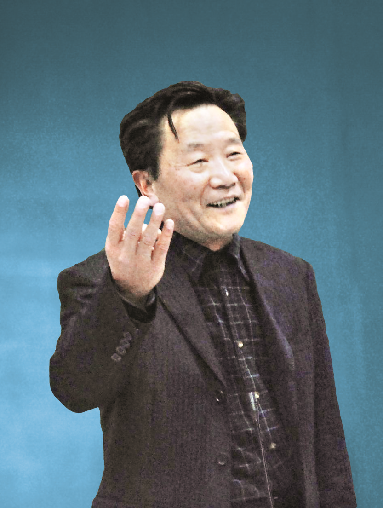
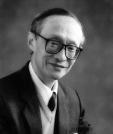
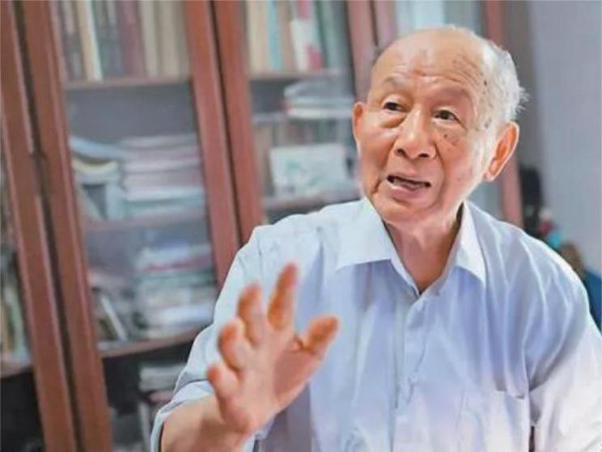

优秀华科人
黄德修
- 科研成果
- 承担多项科研项目：长期坚持在科研第一线，承担了国家科技攻关、国家 863 计划、973 计划、国家自然科学基金等关于光纤通信、光纤传感、光电子器件等方面的众多研究项目，并取得显著成绩，如 1991 年获国家发明三等奖 1 项、1992 年获国家教委科教进步 (甲类) 二等奖 1 项、2001 年获湖北省自然科学二等奖 1 项。
- 发表大量学术论文与著作：出版著作 4 部，参撰著作 4 部，在国内外学术刊物发表学术论文 200 余篇，其编写的全国统编教材《半导体光电子学》获原电子工业部优秀教材一等奖，主编和参编的其他五部全国统编教材和专著也具有重要影响力，其中《半导体光电子学》的修订版还列为全国 “十五” 重点教材。
- 教学贡献
- 坚持一线教学：在承担繁重科研任务的同时，坚持承担本科及研究生的课堂教学任务，每年课时数达 110 学时左右，为学生传授专业知识。
- 培养青年教师与学术群体：积极培养年青教师，先后有三名年青教师和他共同承担《半导体光电子学》教学任务。还培养了一支平均年龄 34 岁的学术群体，包括 5 名教授 (其中 3 名博士生导师) 和 15 名博士 (含 6 名在职博士)，该群体曾受到国家科技部和学校的多次表彰。
- 产业推动
- 首倡 “武汉・中国光谷”：1998 年，黄德修与时任华中理工大学校长周济共同探讨后，向武汉市科委递交了《关于将武汉东湖新技术开发区建成 “中国光谷” 的建议》，引起社会各界广泛关注，推动了 “武汉・中国光谷” 的建设，使其成为在国内外产生重要影响的武汉名片以及代表我国参与全球光电子竞争的知名品牌，还培育出了一批全球知名的行业领军企业。
- 参与创建武汉光电国家实验室：作为武汉光电国家实验室 (筹) 的主要创建者之一，为实验室的建设与发展付出了诸多努力，该实验室为 “武汉・中国光谷” 的发展提供了重要支持，也推动了我国光电子科学研究事业的进步。
- 学术兼职与荣誉
- 学术兼职：是美国光学学会会员、中国通信学会会士，中国光学学会、中国电子学会高级会员，还担任武汉・中国光谷顾问委员会委员，武汉市科技专家委员会主任等职，积极为光电子领域的学术交流与产业发展出谋划策。
- 个人荣誉：曾获得湖北省有突出贡献的中青年专家，享受国务院特殊津贴，还荣获 “光华” 奖、全国教育系统劳动模范、全国模范教授、全国 “五一” 劳动奖章等众多荣誉
杨叔子
- 科研领域
- 机械工程技术创新：发展了切削振动理论与误差补偿技术，研制出切削监控系统，解决了切削过程中的颤振问题，实现了无颤振切削。还攻克了钢丝绳断丝定量检测的国际难题，研制出的 “钢丝绳断丝定量检测系统” 属中国首创，达到世界先进水平。
- 学科交叉开拓：率先在中国开展智能制造的探索性研究，洞悉人工智能与机械制造相融合的新趋势，首倡智能制造，并牵头承担了智能制造领域第一个国家级基础性重点项目，是中国智能制造基础理论与关键技术研究及工程应用的开拓者。
- 教育教学
- 教材与论文著作：发表学术论文 600 余篇，出版专著、教材 12 种，获国家级、省部级教学、图书重要奖励 13 项。
- 教育理念推广：在中国理工科高校首倡并大力推进文化素质教育，将文化素质教育纳入人才培养计划和课程培养体系，推行 “中国语文水平达标测试”，开办人文讲座、首创大学生文化素质教育基地等，在高教界掀起人文热潮。
- 高校管理与学科建设
- 学科建设贡献：担任华中理工大学机械工程系主任等职期间，积极推动机械工程学科的建设与发展，组建了智能制造学科组和智能与集成制造研究中心，为学校机械工程学科在相关前沿领域的研究奠定了坚实基础。
- 学校管理成就：1993 年至 1997 年担任华中理工大学校长，在任期间推动学校的全面发展，提升了学校的综合实力和影响力，使华中理工大学在机械工程、智能制造等学科领域以及人文素质教育等方面都取得了显著进步。
- 人才培养
- 指导学生与青年教师：培养了众多优秀的博士、硕士研究生，指导青年教师成长，为机械工程等领域输送了大量专业人才，其严谨的治学态度和对学生的悉心指导深受学生和同行的赞誉。
- 学术与社会影响
- 学术任职与贡献：担任中共十五大与十六大代表，中国科学院技术科学部副主任、国务院学位委员会委员等众多重要学术职务，为中国机械工程学科的发展规划、人才培养方案制定、科研项目评审等发挥了重要作用。
- 荣誉奖项
- 获得 “国家有突出贡献中青年专家”“全国优秀教师”“全国高等教育先进科技工作者”“人民教师” 等多项荣誉，1998 年获 “全国五一劳动奖章”，2021 年获评 “全国教材建设奖先进个人”
崔崑
- 个人简介：崔崑，男，1925 年出生，山东济南人，金属材料专家。1956 年华中工学院任教，1958 年赴苏联莫斯科钢铁学院进修，先后任华中工学院机械工程二系金属材料教研室主任、机械工程二系主任，国家发明奖励评审委员会冶金评审组委员，国家自然科学基金委员会学科评审组成员等职。
- 科研成果：致力于高性能新型模具材料钢的合金化、夹杂物工程、高性能 Ti（C，N）基金属陶瓷、激光熔覆基础理论等多方面的研究，先后承担国家攻关、国家技术开发、国家自然科学基金等省部级以上课题 20 多项。创造性地研究和开发了一系列高性能新型模具钢，其性能达到了国际先进水平，创造经济效益超过 2 亿元，为发展我国新型钢种做出了贡献。这些高性能模具钢已被列入国家科委“八五”“九五”国家科技成果重点推广项目，其中有四种已列入国家工模具钢标准 GB1299—2014。他的研究成果共获得省、部委级以上奖励 15 项，其中科学大会奖 1 项，国家发明奖二、三、四等奖各 1 项（均为第一发明人），在国内外学术刊物上发表论文 250 余篇。
- 著作：他编著的《钢的成分、组织与性能（上下册）》2013 年由科学出版社出版，该书 2019 年再版发行（6 个分册）。
- 荣誉称号：曾荣获全国道德模范、全国优秀共产党员、五一劳动奖章、全国优秀教育工作者等荣誉称号。2013 年获中国机械工程学会热处理分会授予终身成就奖。1997 年当选中国工程院院士。
这就是华科